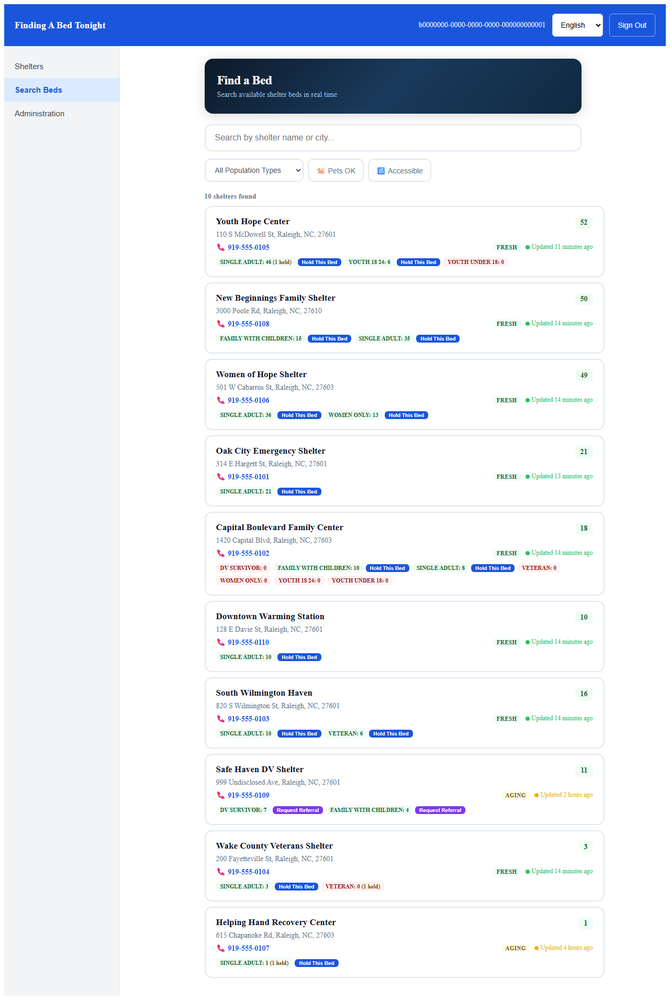
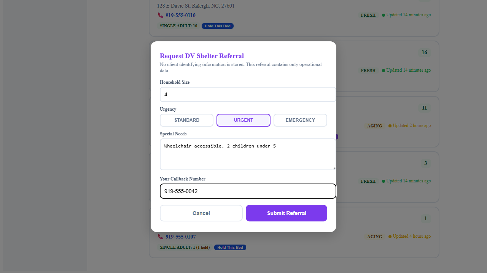
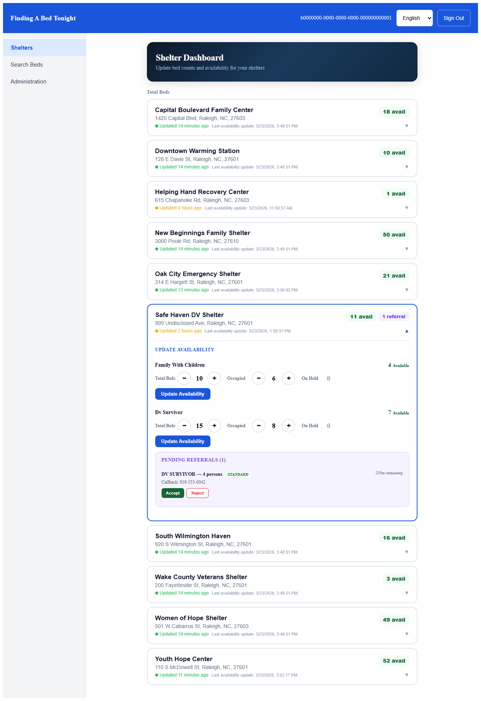
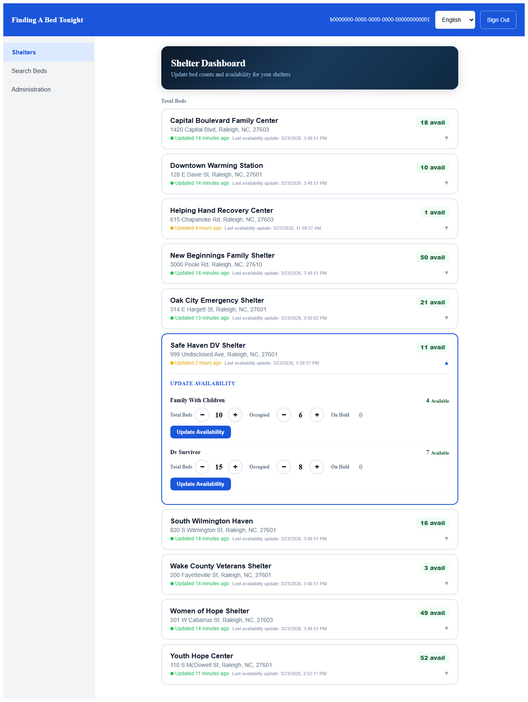
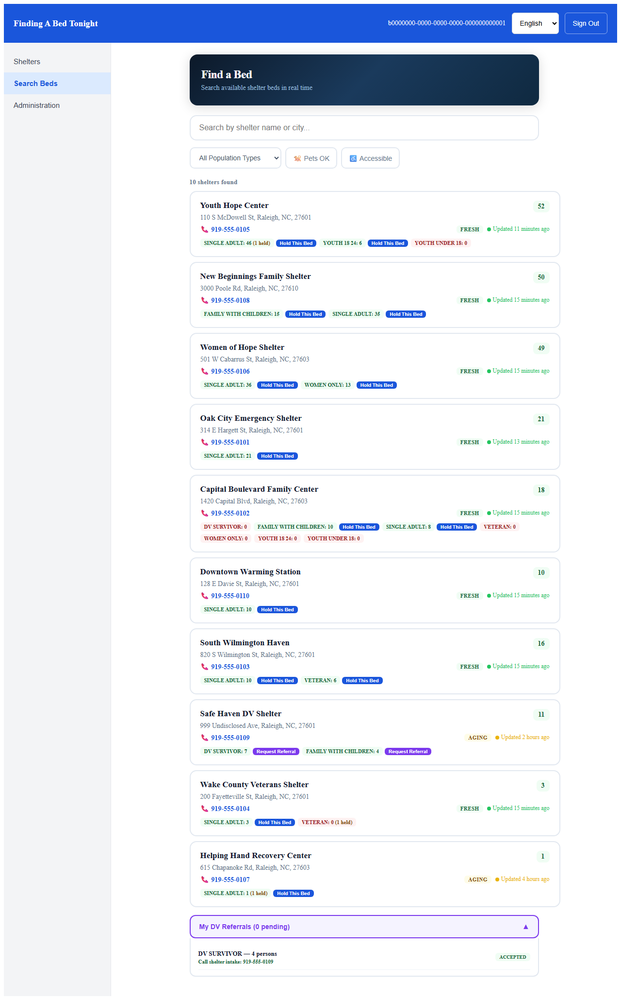
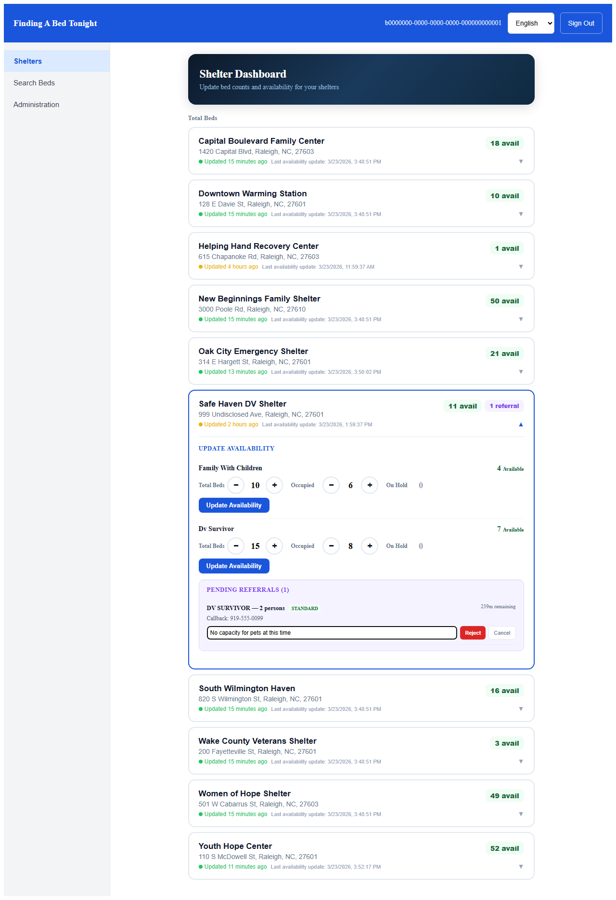

Privacy Guarantee
The referral token contains zero client PII. Only operational data is stored: household size, population type, urgency, special needs, and the worker's callback number. The shelter address is shared verbally during a phone call, never through this system. All tokens are hard-deleted within 24 hours.
Outreach Worker: Request a Referral
DV shelters appear in search results only for users with dvAccess=true (enforced by PostgreSQL Row Level Security). Instead of "Hold This Bed," DV shelters show a purple "Request Referral" button — beds cannot be held directly.

The referral form captures only operational data: household size, urgency level (Standard/Urgent/Emergency), special needs (wheelchair, pets, medical — no names), and the worker's callback number. The banner states: "No client identifying information is stored."

After submission, the worker sees their referral in the "My DV Referrals" section with a countdown timer. The token expires after 4 hours (configurable per tenant). The worker waits for the shelter to accept or reject.
DV Shelter Staff: Screen & Respond
DV shelter coordinators see pending referrals with a purple badge. The screening view shows only operational data: household size, population type, urgency, special needs, callback number, and time remaining. No client PII is visible. Accept or Reject buttons allow the coordinator to respond.

When the coordinator accepts, the referral is removed from the pending list. The referring outreach worker is notified and receives the shelter's intake phone number for a warm handoff call. The shelter address is shared verbally during the call — never displayed in the system.

The outreach worker's "My DV Referrals" section now shows the accepted referral with the shelter intake phone number: "Call shelter intake: 919-555-XXXX." The worker calls the shelter to arrange arrival. No shelter address appears anywhere in the system.

Rejection Flow
If the coordinator cannot accept (e.g., "No capacity for pets at this time"), they reject with a reason. An advisory reminds staff: "Do not include client identifying information." The worker sees the decline reason and can request a referral to a different shelter.

What Happens After
All referral tokens — accepted, rejected, or expired — are hard-deleted within 24 hours by the purge service. No audit trail of individual referrals survives in the database. Only aggregate Micrometer counters (requested/accepted/rejected/expired) remain for HUD reporting, backed by Prometheus when the observability stack is active.